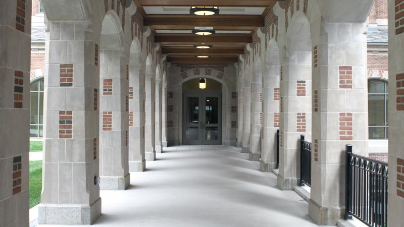

Kelly Kacan
University of Michigan School of Information-Bachelors of Science in Information
Career Goals
My career goals include working in data science, data analytics, and/or information
technology and systems field. I want to be able to have a chance to explore a variety
of technical fields I am passionate about to find the right fit for me. I want to
keep building on my soft skills including public speaking and presenting as well as
my programming and technical skills. I am open to continue to learn in order to grow
in my field.

Relevant Course Work
Currently I am taking a Web Design and Accessibility Course, Information Envionments at Work, and Models of Social Information Processing.
Past relevant courses include Introduction to Statistics and Data Analysis, Introduction to Information Science, Programming, Information, People, and Data Oriented Programming.
Cover Letter
To whom it may concern,
My name is Kelly Kacan, and I currently attend the University of Michigan and will be graduating in May 2021. I am extremely interested in the Information Technology and Cyber Security student trainee oppertunity. My goal is to pursue a career in information technology and cyber security and I believe this position would continue to give me valuable experience in the technology. I am currently pursuing a degree in Information Science from the School of Information and History, in the School of Literature, Science, and the Arts here at the University of Michigan. In the future, I want to continue developing, improving, and educating on the importance of information technology and cyber security to create a better and safer future for our country. I am reliable, responsible, and I am always looking for new ways to learn and grow.
I believe I can bring a different perspective to the table. First of all, I am majoring in a technical field that heavily focuses on working and understanding data as well as data security. I believe with my background I can be a contributor to intersecting government and technology in the corporation. I am also a female in a technical major where women are underrepresented, so I am able to bring new perspectives. I am also a history major so I am able to evaluate the past in order to implement better decisions for the future involving technical strategy and development.
One reason that I am an excellent candidate for this position is that I work very well in a group environment, especially in regards to programming, technology, and security. I am proficient in python, R, html, css, and Microsoft Office including excel. I attended an alternative Fall Break Trip with the University of Michigan’s School of Information and I worked with two other University of Michigan Students on a project for the Non-profit Organization called Arts and Scraps that provides children with the opportunity to learn STEM through the creative arts. Through utilizing data analysis techniques my team and I were able to create an online survey for Arts and Scraps to gather feedback on STEM programs from teachers and organization Leaders. Our team also input past data into the system and generated visualizations for the client, while maintain data privacy and security. Through delegating tasks and working efficiently we were able to complete the project during the short time frame. For my final project for SI 206: Data Orientated Programming, I also collaborated with a group of peers to access data from an API using itunes and Youtube. We had the ability to learn how to collaborate through the use of github. We utilized github to work collaboratively on the project and continued to build on our code until we reached a successful finished product. We were able to successfully sort through the large amount of data and deliver an accurate response to user input while securing the data. This experience allowed us to analyze and manipulate data as a team, as well as take ownership of the project by delegating tasks accordingly. This class also helped me build on my core programming and software development skills. I also have experience with R through my Statistics course this past semester. We used R in order to organize and visualize big data through different through data analysis problem solving. Our goal was to input large excel spreadsheets of data into R and output different types of graphs and data visualizations in order to make this data more accessible and usable for study.
However, I also have excellent writing skills from being a dual degree history major. I have done very well in my history courses that were mainly essay based, and have participated in writing opportunities outside of class. I was the managing editor for the Michigan Journal of History, therefore I assisted students in the editing process to help improve their writing. I also have crafted a museum exhibit for Hatcher Graduate Library on Black Women Reproductive Justice with Professor Lakisha Simmons, and wrote many of the exhibit captions to display clear and concise information for viewers while upholding University of Michigan’s dedication to diversity, equity, and inclusion. Furthermore, I have done research for Professor Lakisha Simmons for her upcoming publications.
I have experience conducting research through interviews and working with large amounts of information. I have volunteered as a researcher in the William L Clements Library. This gave me the beneficial experience of working in a library research setting. I had the opportunity to interview curators and learn about their specific projects. My research included creating oral histories for the Clements Library curators on their journey to their current profession. Therefore, I have the necessary human and computer interaction skills as well as exceptional communication skills. I was able to start an online
database where these interviews are recorded for the Clements Library. This allows others to understand the important work these curators perform to preserve history for public use and continued research. Currently, I am also on a research team conducting user experience interviews to understand the best learning styles for students interested in learning python. I work with School of information graduate students to interview undergraduates taking an online python course to determine if outlining or concept mapping is more useful in understanding python structure. I have also conducted research through the Undergraduate Research Opportunity Program. I worked with University of Michigan professor of women’s studies and history Professor Lakisha Simmons on researching for her new book on the history of Black Women on Louisiana Sugar Plantations. I had the opportunity to sort through a large amount of information including the University of Michigan Library as well as the Louisiana State University Library archives. This gave me the opportunity to build on my understanding of the research process and collaboration of working with a professor. Furthermore, I have also work at the A Alfred Taubman Health Sciences Library as a resource for patrons regarding library information and specific locations to locate data. I work with library databases to locate specific information, do administrative tasks, and provide excellent customer service.
Another reason I believe I am a competitive candidate for this position is my abundance of leadership experience. I served on the board known as the Undergraduate Committee through the History Department. In this position I am able to work directly with the head of the department and other Faculty and Staff to brainstorm ways to boost numbers of majors and minors for the department. This includes planning events, advertising, and connecting with University Housing and other colleges within the University. Moreover, I have leadership experience through my Residential Coordinator position as well. I was a traditional Residential Advisor last year, but due to my commitment to the position and going above and beyond what was required of me I was promoted for the 2019-2020 school year. I still retain my residential advisor duties consisting of helping Freshman through their transition to college life. I am the authority figure who enforces rules and regulations as well as an ally who helps students obtain the resources they need as they attempt to navigate the challenges of college life. However, as a Residential Coordinator, I also lead and facilitate new staff trainings, and advise hall council. I am able to work side by side with the hall director in regards to understanding and promoting a positive staff morale and consistent use of teamwork among our staff. The other areas of my job include promoting University Standards of Diversity, Equity, Inclusion; an important part of trust and team building in regards to my residents and my staff.
Thank you for considering me for this position, and I hope you have a great rest of your day.